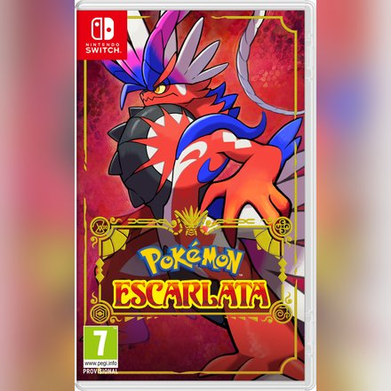
Pokémon Escarlata
Nintendo Switch · 2022
Región de Paldea · Escarlata y Púrpura (2022)
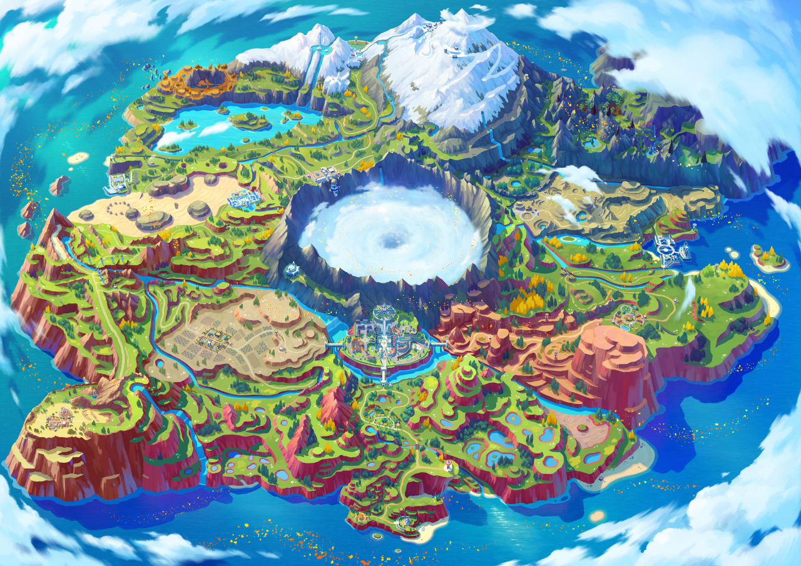
Mapa de la región de Paldea.

Nintendo Switch · 2022
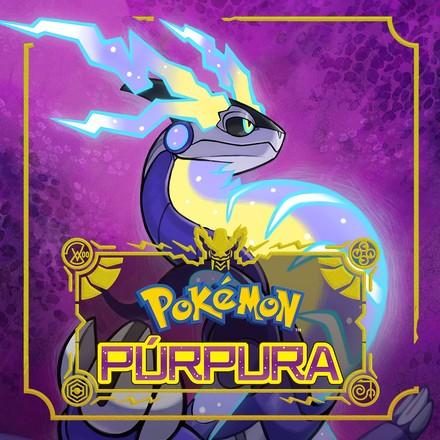
Nintendo Switch · 2022
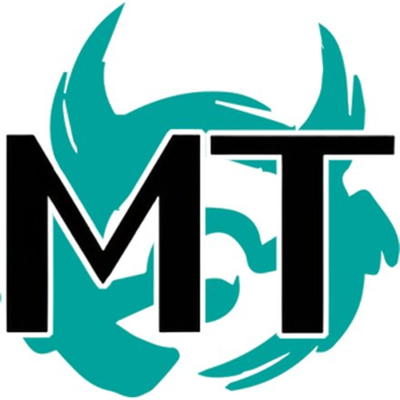
Nintendo Switch · 2023
Nintendo Switch · 2023
La primera parte del DLC transcurre en Noroteo (Kitakami), una tierra rural con festivales y leyendas propias.
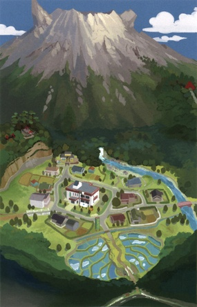
Ilustración de Noroteo.
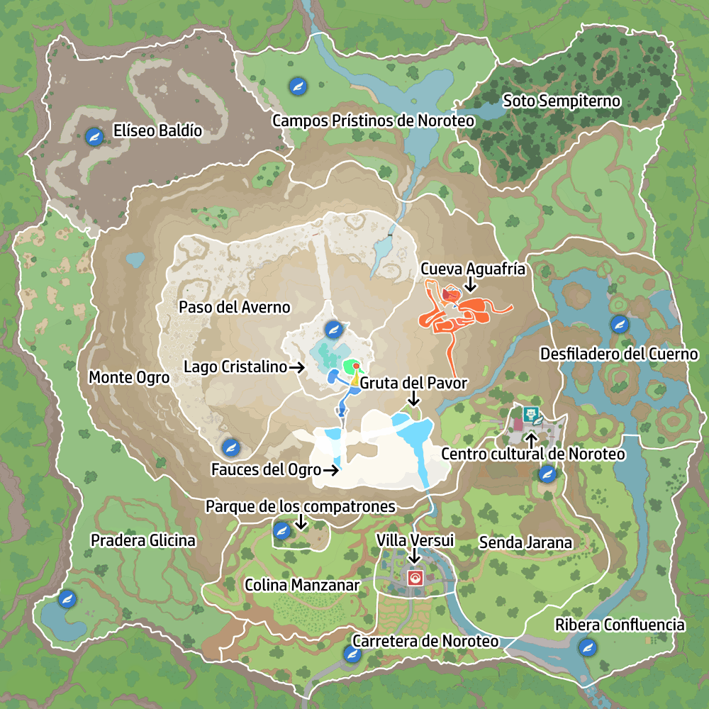
Mapa de Noroteo.
La segunda parte transcurre en la Academia Arándano, una escuela en mitad del mar con un gran hábitat interior: el Terario.
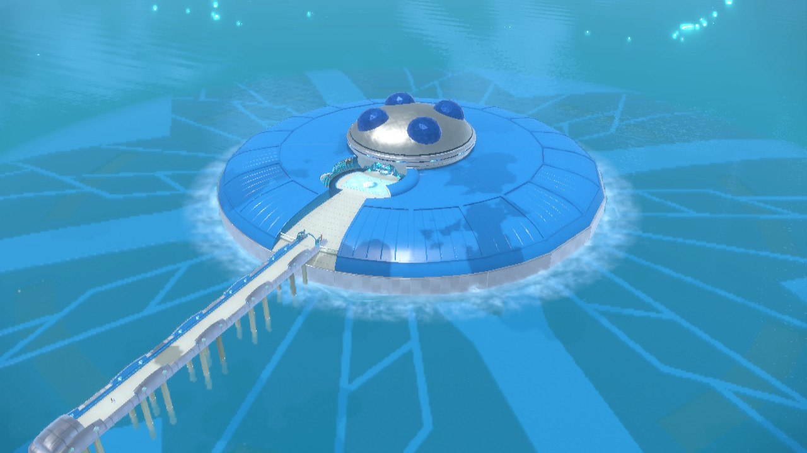
La Academia Arándano.
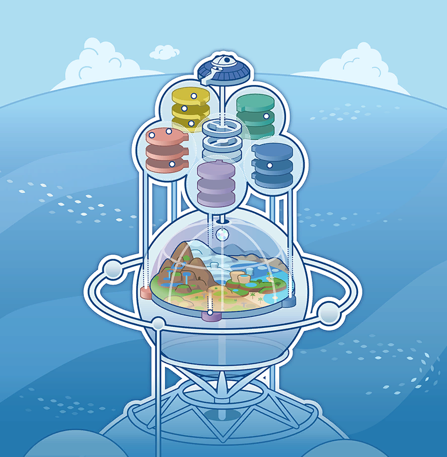
Ilustración de la Academia Arándano.
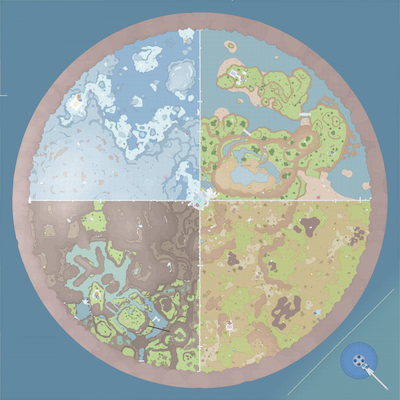
Mapa del Terario.
Pokémon Escarlata y Púrpura
El tesoro oculto del Área Cero
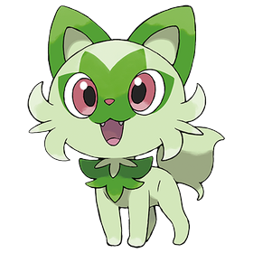
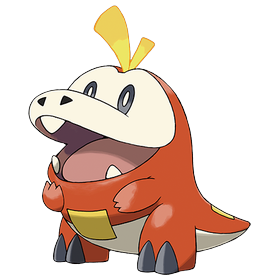
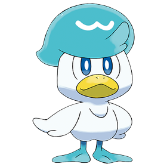